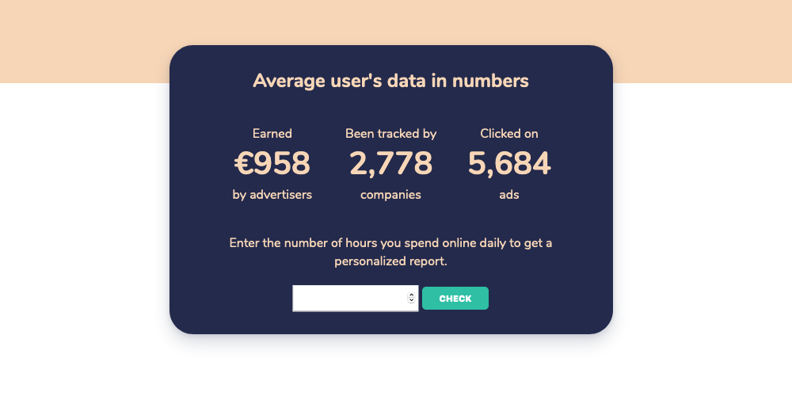

The online advertising market is an unavoidable part of our society and has grown to a massive scale over the years. But how much impact do these ads have on us? How many ads are we seeing and interacting with each day?
It’s immensely difficult to estimate this. There are multiple factors which can shape the numbers. It can be influenced by where you live, how you move, which websites you visit and many others.
Redcrow in 2015 estimated that you see between 4000 to 10000 ads a day, and current estimates are affirming the number raised to at least 6000 per day but without any experimental data to back this up.
This number may seem quite surprising because there are many ads you wouldn’t consider actually being ads. For example when you go to the supermarket, you see discounts on the shelves or brand dispensers trying to influence your purchase.
As the world moves online, so does where we see and interact with advertisement. Social media accounts for a large share of the total ads you see. “Bad Ad Johnny” estimates that an average user is exposed to 11,250 ads per month, which equates to 375 every single day. The same source estimates that more than one third accounts in social media.
This number has probably increased since such estimations. We don’t think it’s necessary to remind you of the amount of ads you see on Instagram. In recent years they have aggressively increased their advertising, to 1 in 3 stories and 1 in 4 posts.
The number of ads you see on Google might be harder to get a feel for. Their ads are a lot more embedded in the searches and it’s hard to recognise them. If you look for popular keywords, more advertisers are likely to promote their website on top, thus you are more exposed. This practice makes it even more difficult to estimate when you’re getting information through an ad or on a website.
Moreover, how much time you spend online and what you do, has a huge influence on your ads exposure. If you, for instance, work all day with Excel or shared documents in the G suite you would see less ads than if you’re doing some research.
Unfortunately, there is no precise data online on which kind of user sees the most ads or segmentations with precise numbers. Thus, we tried to estimate how many ads you click on each day. Our calculations are based on experimental research conducted by the Rita team and industry reports. You can use our free tool to estimate how many ads you’ve clicked on.
Definitely the accuracy of this measure can be improved, however you will also be able to see your actual values using our alpha version.
As advertisements are increasingly being personalized and intruding our daily life, people should educate themselves on the matter. Every single user should be aware of when and how they are targeted to realize whether they are being influenced or not. We are advocates of helping users make free, informed and conscious choices.
Customers and companies should collaborate and dialogue with each other as trust in online environments is key to a fruitful and long lasting relationship. Unfortunately online trust between firms and users is decreasing, and destroying value for both parts.
Rita's objective is to empower users to make informed choices about their data, empowering them to choose what and who to share with. Sign up now to test out Rita!
Rita strongly believes in a democratised data economy, where any internet user can access their data without effort. We aim to empower any user, by providing a secure way of understanding and managing personal data.